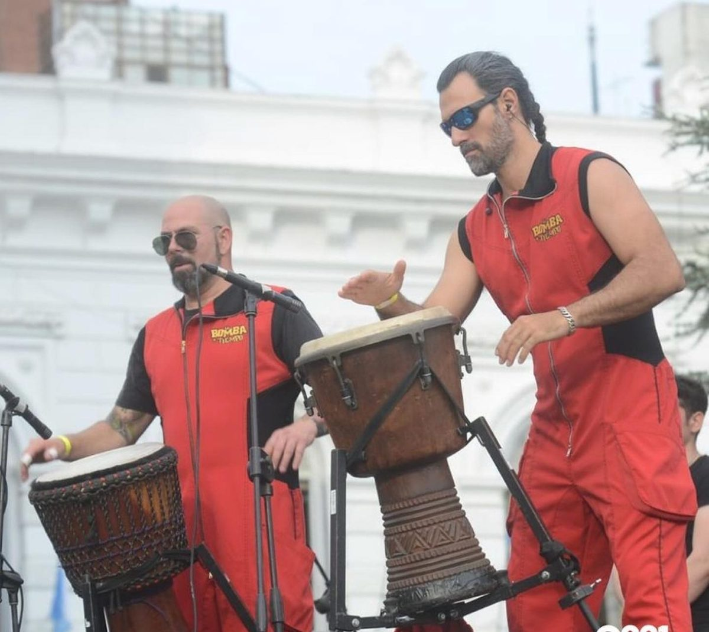
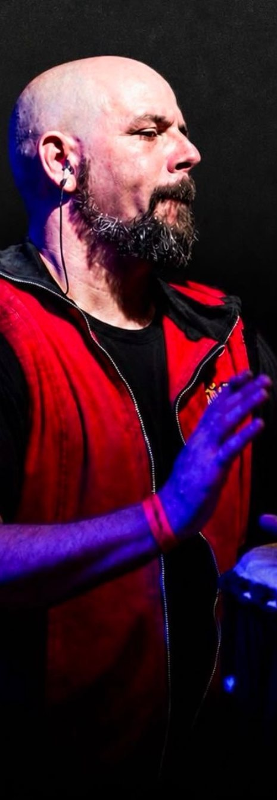
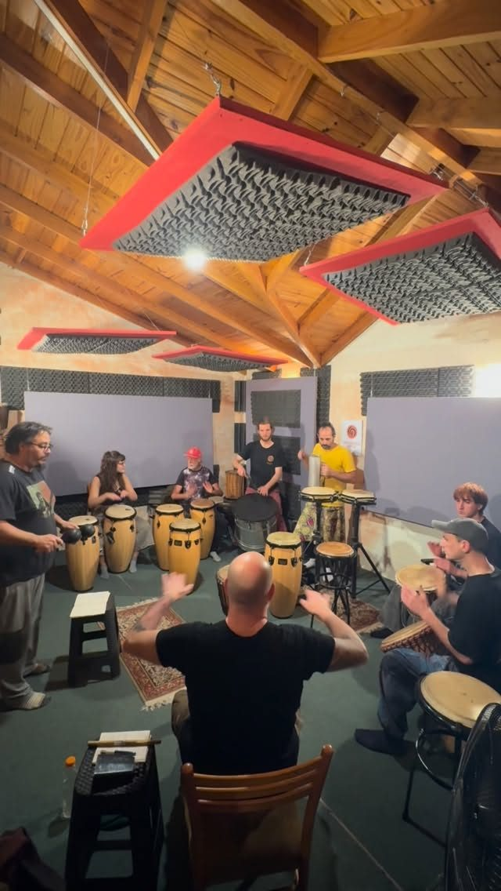
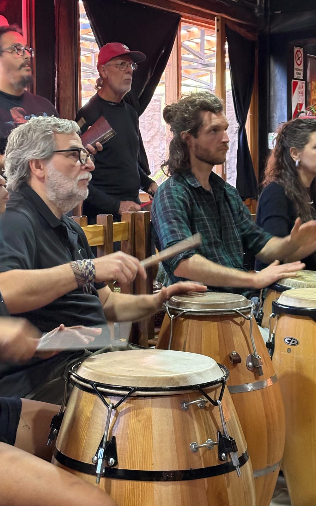
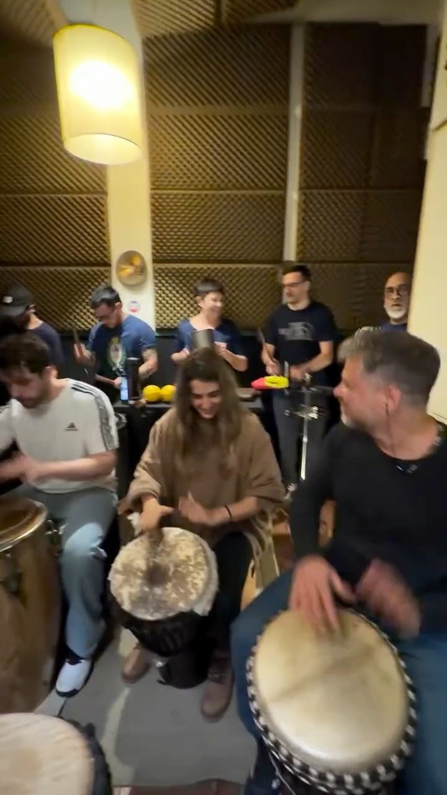
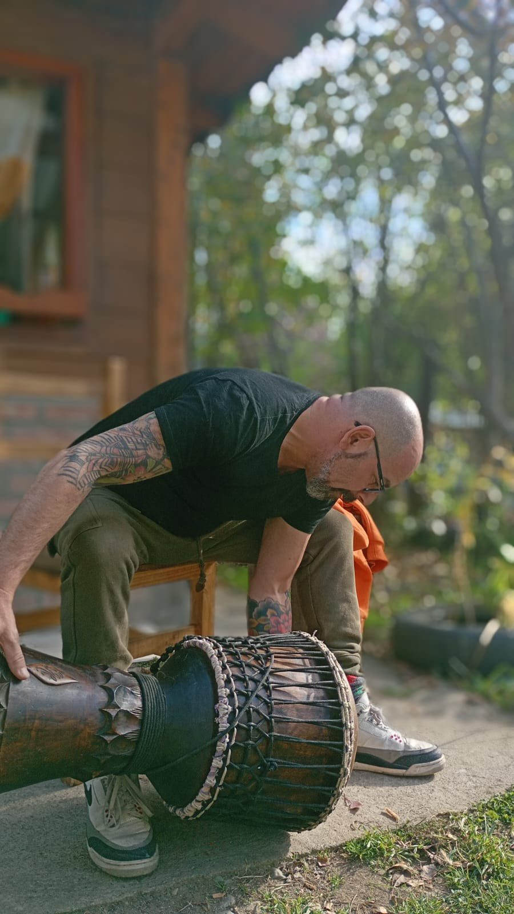
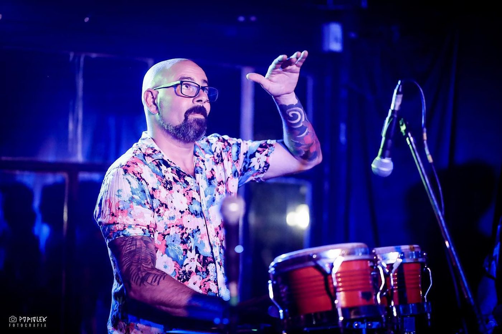

Ritmo y percusión con señas
Percusionista de La Bomba de Tiempo y director de Tuncha.
Talleres para tocar en ensamble, improvisar y componer el ritmo en tiempo real. Multinivel: arrancamos desde cero.

Presencial en CABA
Los cupos son limitados. Escribile a Cheche y te pasa toda la información.



Cómo funciona
Director y ensamble construyen el ritmo en el momento, comunicándose con un sistema de señas.
La propuesta es abierta a personas con o sin experiencia, en la percusión o en el lenguaje. Todo se aprende de manera práctica y lúdica: tocando.

Talleres por el país
Seminarios intensivos de ritmo y percusión con señas, djembe y congas. Ya pasaron por la Patagonia y a fin de mes llegan a Misiones.
Posadas: Workshop de Congas + Ritmo y Percusión con Señas. Organiza APA, info al 376 493-6422.
Agenda
En escena


Contacto
Escribile a Cheche para reservar tu lugar, consultar horarios o llevar un taller a tu ciudad.
Cheche Beraja · Percusión